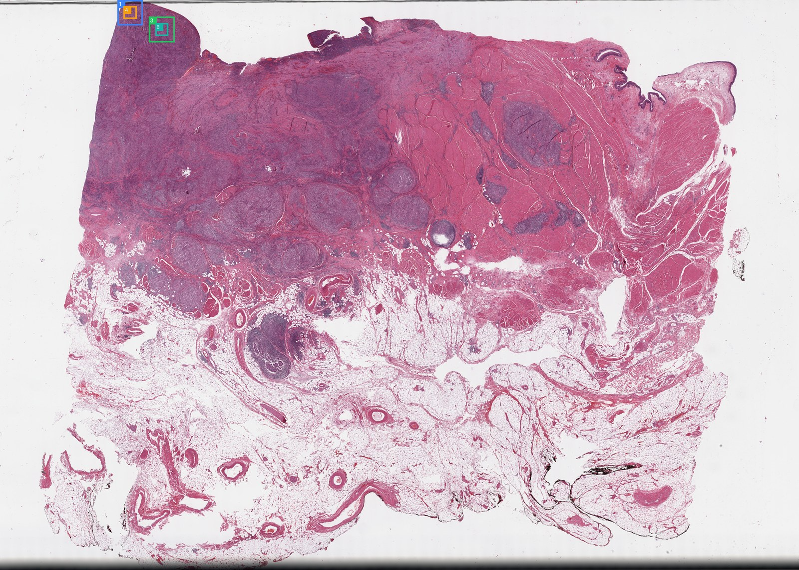
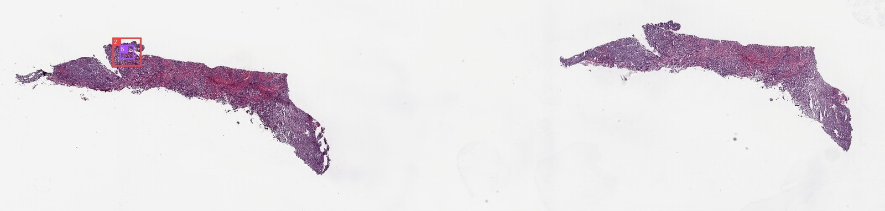

Visual Evidence
Review ROI thumbnails, WSI overviews, zooms, and segmentation overlays.


Each card opens in the inspector with source path, segmentation fractions, zoom lineage, and related evidence.
MedGemma rounds are shown as morphology evidence, separated from final report generation.
No morphology rounds found.
KEEP hits are supporting or differential knowledge, not direct visual observations.
No KEEP hits found.
A directory-style timeline. Click a step to inspect the exact checkpoint payload without leaving the page.
01_roi_selection
02_site_prediction
04_segmentation_qc
06_preliminary_diagnosis_sufficiency
07_reinspection
09_slots_claim_verification
10_report
Claims should be supported, weak, not assessable, or removed. The evidence column links claims back to figures or non-image evidence.
| Claim | Status | Field | Statement | Evidence |
|---|---|---|---|---|
| supported | site | bladder / urothelial tissue The site is explicitly provided as 'bladder / urothelial tissue' in the evidence graph metadata. | ||
| supported | primary_diagnosis | High-grade urothelial carcinoma The combination of the known bladder site (evidence::site) and the visual evidence of a high-grade malignant neoplasm (supported by C005 and C006) confirms the... | ||
| supported | broad_type | carcinoma The images show cohesive sheets of atypical cells with epithelial morphology (polygonal shape, distinct cell borders), consistent with a carcinoma. | ||
| supported | subtype | urothelial carcinoma Given the confirmed bladder site and the presence of a carcinoma, the specific subtype is urothelial carcinoma. | ||
| supported | malignancy | malignant The images display a neoplastic process characterized by cellular atypia, high cellularity, and necrosis, which are hallmarks of malignancy. | ||
| supported | grade | high grade The tumor cells exhibit marked nuclear pleomorphism, hyperchromasia, and a high nuclear-to-cytoplasmic ratio, consistent with a high-grade lesion. | ||
| supported | necrosis | present; extensive geographic necrosis is a prominent feature. ROI 63416 contains a large area of eosinophilic debris and loss of cellular detail (Dead tissue fraction 23.6%), representing extensive geographic necrosis. RO... | ||
| not_assessable | invasion | invasive features if visible The provided ROIs show high-power views of the tumor parenchyma. There is no visible interface with normal bladder wall structures (muscularis propria) to defi... | ||
| supported | ihc_molecular | not assessable from H&E images Immunohistochemical and molecular data are not available in the provided H&E images or evidence graph. | ||
| supported | tumor_architecture | Diffuse sheets and solid nests of tumor cells with extensive geographic necrosis. The tumor architecture is characterized by diffuse sheets and solid nests of cells (visible in all ROIs) with prominent areas of geographic necrosis (visible i... | ||
| supported | cytology | High nuclear-to-cytoplasmic ratio, hyperchromatic nuclei, and scant cytoplasm. The cells appear relatively small to intermediate in size. The cells are small to intermediate in size with very little cytoplasm (high N/C ratio) and dark, irregular nuclei (hyperchromasia). | ||
| supported | stroma_inflammation | Fibrous stroma with a lymphocytic infiltrate is present between tumor nests. There is a significant inflammatory infiltrate (lymphocytes) present within the tumor stroma and surrounding tumor nests, particularly evident in ROI 96183 (In... |